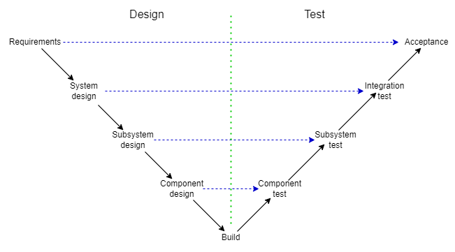

There are lots of potential sources of errors in a design.
This session ignores most of these and concentrates on functional test.
First: DESIGN YOUR TESTS!!
There are techniques to help with testing:
The Reasons for Verification:
To establish that a design or implementation ‘works’ … in all imaginable cases.
The ‘first cut’ of a new design will almost certainly have some fairly gross errors. Because they are so bad they cause symptomatic faults very rapidly and so are easy to find. It is fairly normal to start with some crude tests and simply examine a short output trace at this stage. More complex, ‘exceptional’ cases may gradually be added and examined.
Later the design may be modified to fix esoteric faults or to accommodate extra features. Any changes will invalidate all earlier test results so the tests will need to be repeated. This ‘regression testing’ should be planned so that it is as cheap as possible to perform.
It is difficult to devise ‘high-level’ tests which can exercise every ‘low-level’ component thoroughly. [Imagine picking a random, 3-input gate in a Pentium and wanting to write a programme that used all eight input combinations.] Therefore deliberate testing and qualification of each unit in isolation is essential if the whole system is to work under all design circumstances.
As always the process needs to be both as thorough and as cheap as possible.
Each ‘layer’ in the design hierarchy should be tested against its expected function. It is not easy to test the lowest level functions thoroughly in a fully integrated system. Each layer of tests should address how its components are put together; those components should already have been verified.
V diagrams can be drawn in different levels of detail and with various labels; the principle is to show that each level of the hierarchy of the design should have an equivalent set of tests.
Progress moves left to right; time should move in a similar direction although there may be iterations if problems are discovered. The (commercial) desire is to keep any backtracking as small as possible to keep penalties low.
Hopefully this is familiar material! It is often quoted in relation to software development but it is applicable to any hierarchical engineering.
Several words are used interchangeably for the test process. It is not possible to give hard-and-fast rules on these, but as a guide:
(The first two of these are formalised by the IEEE w.r.t. software.)